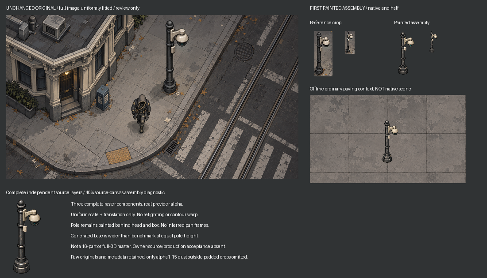
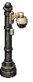
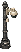
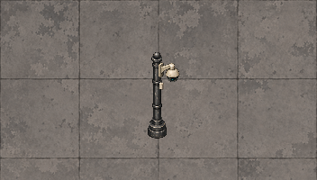
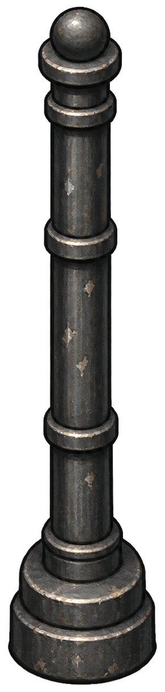
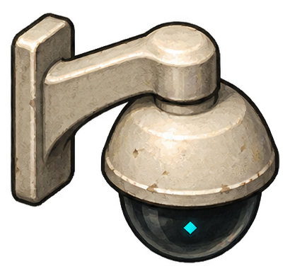
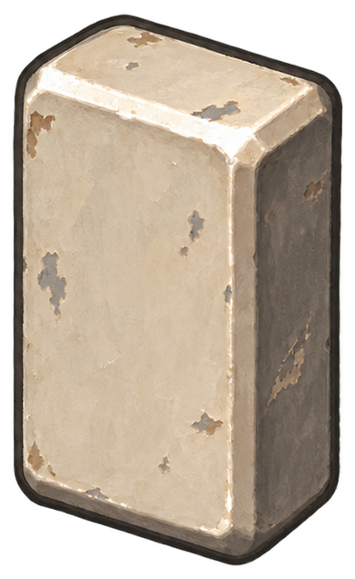
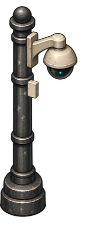
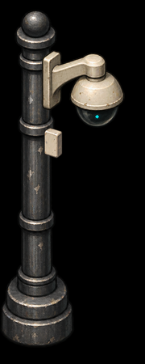
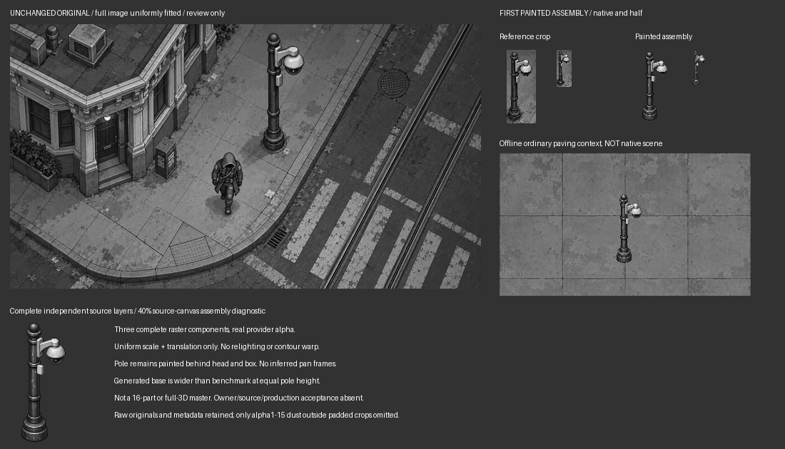

Review only, not accepted. Three independently editable raster components, not a 16-part or full 3D master. Original mapped pilot is preserved.
Current limits: wider base, left-edge antialias margin unresolved, native highlight stippling. No second painted assembly preview. No native capture or complete scene claim.










Scope and actual tests · Editable uniform layer transforms · Real-alpha and completeness audit · 12-test results · Input/output hashes